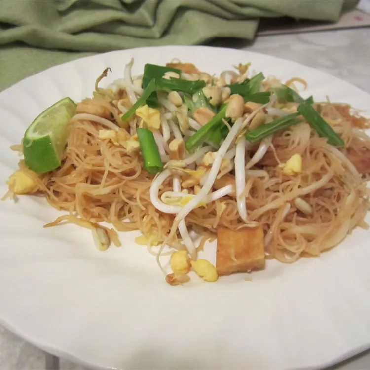

PAD THAI NOODLES

Authentic Pad Thai Noodles
This is an authentic Thai recipe, with the proper ingredients (no ketchup or peanut butter). It is easy, quick, and absolutely delicious.
Ingredients
- ⅔ cup dried rice vermicelli
- ⅔ cup thinly sliced firm tofu
- ¼ cup peanut oil
- 1 large egg
- 4 cloves garlic, finely chopped
- ¼ cup vegetable broth
- 2 tablespoons fresh lime juice
- 2 tablespoons soy sauce
- 1 tablespoon white sugar
- 1 teaspoon salt
- 3 tablespoons chopped peanuts
- 1 pund bean sprouts, divided
- 3 green onions
- 2 limes
- ½ teaspoon dried red chili flakes
Steps
- Soak rice vermicelli noodles in a bowl filled with hot water until softened, 30 minutes to 1 hour. Drain and set aside.
- Heat peanut oil over medium heat in a large wok.
- Cook and stir tofu in the wok, turning the pieces until they are golden on all sides.
- Remove tofu with a slotted spoon and drain on plate lined with paper towels.
- Pour all but 1 tablespoon of used oil from the wok into a small bowl; it will be used again in a later step.
- Heat the remaining 1 tablespoon of oil in the wok over medium heat until it starts to sizzle.
- Pour in beaten egg and lightly toss in the hot oil to scramble the egg.
- Remove egg from the wok and set aside.
- Pour reserved peanut oil in the small bowl back into the wok.
- Toss garlic and drained noodles in wok until they are coated with oil.
- Stir in vegetable broth, lime juice, soy sauce, and sugar. Toss and gently push noodles around the pan to coat with sauce.
- Gently mix in tofu, scrambled egg, salt, chili flakes, and 3 tablespoons peanuts; toss to mix all ingredients.
- Mix in bean sprouts and green onions, reserving about 1 tablespoon of each for garnish. Cook and stir until bean sprouts have softened slightly, 1 to 2 minutes.
- Arrange noodles on a warm serving platter and garnish with 3 tablespoons peanuts and reserved bean sprouts and green onions. Place lime wedges around the edges of the platter.